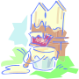

Een nieuw ontwerp.

Ontwerpen
Het eerste en vaak de moeilijkste stap bij het ontwikkelen van een website: het ontwerp. Hierbij stel je eigenlijk de hele website samen, waardoor je een goed beeld krijgt en geeft van wat je wilt.
Het ontwerpen van een website bestaat vaak uit meerdere onderdelen: wireframes. Een wireframe is een tekening van een website, waarbij je aangeeft waar wat komt. Er zijn twee soorten wireframes:
- Low fidality wireframe (voorbeeld)
- Hierbij beschrijf je alleen de plaatsen waar bepaalde elementen moeten komen. Er komt geen detail in naar voren, en het belangrijkste is dat je ongeveer weet wat er op de pagina moet komen. Veel low fidality wireframes worden gemaakt met gomockingbird.com.
- High fidality wireframe (voorbeeld)
- Dit beschrijft de website met wat meer detail. Er hoeven nog geen teksten te komen, maar we weten wel precies hoeveel pixels groot elementen zijn, welk lettertype, waar elementen komen en waar we op moeten letten. Veel high fidality wireframes worden gemaakt met Photoshop.
Bezoekers
Het uiteindelijke doel van uw website is natuurlijk bezoekers trekken, en terug laten komen. Alleen op die manier kan je iets verkopen. Als je bezoekers blij zijn met jouw ontwerp, dan komen ze sneller terug. De website is het visitekaartje van uw bedrijf.
Zelfs dingen die je nooit zou kopen via het internet, zoals een huis, word eerst bekeken via het internet. Internet is op dit moment het belangrijkste medium tussen u en de klant.
Jouw design omzetten naar een website
Heb je een design, of heb je een design laten maken, dan moet die uiteraard nog worden omgezet naar een website. Bij een ontwerp is het belangrijk dat je tevreden bent: alles word in de website gezet zoals in het design is afgesproken. Letterytypen, randen en afmetingen moeten overeenkomen zodat de website precies wordt gebouwd zoals je in gedachten hebt.
Het omzetten van design naar website is mijn uitdaging. Het technisch functioneren van de website met goede zoekmachine mogelijkheden en alles wat daar bij komt kijken, is waar ik voldoening uit krijg. Pas als u tevreden bent, ben ik dat ook.


{kind=link}
{kind=link}